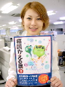
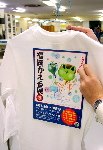
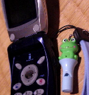
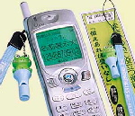
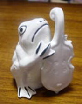
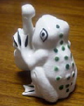
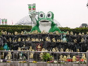
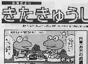

福岡かえる展にみんなのイラストを！ 【福岡かえる展３実行委員会】福岡に来たいけどこれない過エラーのために、今回は、『かえるイラスト展』を開催することにしました。みなさんの作品を、印刷出力してラミネート加工して会場で展示します。会期が終了したら、公式ポスターラミネート１枚に、自作分の５枚をセットで返送します。どんどん応募してくれー。 かえる展運営のために、会場に訪れた人たちが、応募作品をほしいいいいいーっ！と言った場合は、会期中に限り販売しようと思っています。
福岡かえる展３を支援するためにも、イラスト作品を待っています！詳しくは、ここを見に行こう！
 福岡かえる展会場用制服決まる！【福岡かえる展３実行委員会】かえる展会場で働くスタッフ用のＴシャツを作ることになりました。ポスターそのものをプリントしたもので、けっこうな迫力である。会期が終了したら、そのまま記念品になります。受けること請け合いですよー。
会場の看板準備（５月２６日、２７日）、会場の設営（６月３日）、会期中（６月５日から１０日）に会場に詰めるスタッフには、優先的に製作しますので、いまのうちに決心していてくださいませー。
笛付き携帯電話ストラップ！カエル君現る！ 【徳島発=阿波住宅様】この度当社は、地震災害時、その他緊急時に於いて役立つ「笛付き携帯電話ストラップ」---Buji・・・カエル君。(実用新案登録済み）を開発致しました。この、ストラップを役所、その他企業主催の会合、イベント等でノベルテイ−品として、一人でも多くの方々に、所持していただけることにより地震災害時、その他緊急時に於いて大きな威力を発揮出来ると信じて居ります。 詳細については、ぜひ下記の当社ホ−ムペ−ジをご覧下さい。
 全国自治体は一括購入を！【全国かえる奉賛会】試供品を届けて下さってありがとうございます。カエルユーザー必見のストラップがついに発売したぞー！！しかも、これまでのカエルストラップと圧倒的に違うのは、実用性が高いということである。
震災の体験から生まれたストラップは、痴漢に襲われたり、地震で倒壊した建築物の下敷きになったときに、ストラップの笛を吹けば、たちどころにカエルが助けてくれるのであるううううううう。 しかし、住宅産業の片手間に、この素晴らしい発想の仕事を行った（株）阿波住宅は、今後もカエル関連商品を続々と生産してくださいー。カエル新聞が応援するぞー。
イマスグ申し込もうではないかあああ。
目つき鋭いイタリアカエル！ 【イタリア発=よっしぃ同志記者】一年ほど前から「かえる新聞」は購読させて頂いていたのですが、この度デジタルカメラ購入を機に、初めの投稿を決意しました。このカエル画像は、私の姉がイタリア土産として購入してくれたイタリア産のカエルです。 姉は「イタリアに行くならカエルを土産に買ってこい！」という私のリクエストを叶えるため、必死に探し回ってくれたそうです。「すごく大変だった。」と怒りながら渡されました。「イタリアのカエルというだけではなく、”カプリ島のカエル”という希少性があるのだ。、しかも値段は高かった。」
 チェロのような、コントラバスのような大型弦楽器を持っていますが、さすがイタリアンなカエルだけあって目つきが尋常ではないところが、怖くて気に入っています。他にも変なカエルグッズを集めているので、またの機会に投稿します。今後も、どうぞ宜しくお願いします。 【全国かえる奉賛会】お姉さま！ごくろうさまであった。しかし、欧州ではカエルを幸福を運ぶ縁起物として珍重しているところもおおい。きっと、妹のためのカエル捜しは、お姉様にも大変な福運をもたらすことであろうぞ！
かつての同盟国イタリアは、目つきが鋭い人が多いと聞くが、このカエル君も、ミラノ歌劇場管弦楽団に所属して、日々緊張してオペラ音楽を演奏しているのであろうか。指揮者もいるんでしょうか。全員並べたら壮観でしょうね。うらやましー。
 宮崎カエルテーマパーク健在！【宮崎発=Kaoru同志記者】大王、初めまして！毎週、カエル新聞が届くのを待ちに待ってるカエラーです。先日、宮崎県の綾へ行きました。行きには気付かなかったのですが、帰りに発見してしまいました。なんともいえない感動！皆さんも宮崎へ行くことがあったら、ぜひ、「のじりこぴあ」によってください。カエルの旗がたくさん立ってるのですぐに分かると思います。 【全国かえる奉賛会】平成9年5月20日号で紹介したカエル系テーマパーク『のじりこぴあ』健在のニュースは、ポーセリンパーク、ネイブルランド、シー○イヤ、ハ○ステンボスなど、敗退と苦戦を続ける九州のテーマパークを勇気づける！！ カエルの大群落を築造する『のじりこぴあ』は、健在なり。やっぱーカエルの功徳というものであろう。第三セクター系テーマパークやレジャー施設のうち経営が悪化して、やばくなっているところは、今すぐに、遊技施設を解体して、『のじりこぴあ』のようにカエルを中心にしたテーマパークに改造しようではないかあ。
 北九州市市政便りにカエル漫画！【北九州発=カエルのガーデナー甚六同志記者】平成13年3月26日号で報告した”かえるプレス”に続きまたまた、私の住む北九州市では”市政だより５月１日号”に、なんと、かえるマンガが登場！行楽の季節にふさわしく、かわいいかえるカップルのピクニックという設定です。絶対、北九州市役所には”隠れカエラー”がいると思います。
【全国かえる奉賛会】実は大王の生まれ故郷は、北九州市だ。カエル１００万都市として、福岡市の人口を再逆転する日を狙ってほしいぞ！
投稿採用者に武功カエル徽章を授与！ |
かえる古新聞過去に取り上げた記事を見出し付きで一覧したい人は、ここをクリック◆創刊号を見る◆先週号を見る◆話題の号を見る◆かえる新聞の昔を読む◆COOL NET FROG RANKING !
|
私も入っています。。全国かえる奉賛会
大王様に会うには、このバナーをクリック。ずっと奥に写真館があるぞ。全国かえる奉賛会に入会するには、自分のホームページのどこかに、下の部分を追加するとバナーがリンク付きで表示されるぞ。どんどん入会しましょー |


|